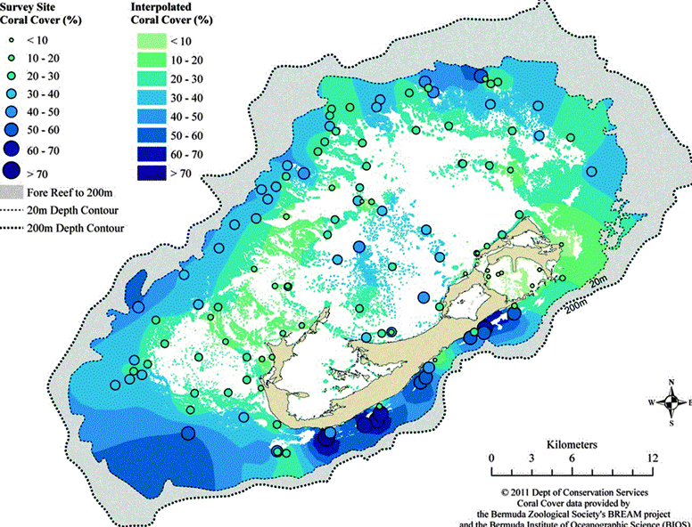

This lecture provides an overview of methods that can be used to estimate the value of nature-based solutions’ services. This lecture also presents a cost comparison of nature-based solutions to their corresponding traditional grey infrastructures. Case studies of valuing nature-based solutions in practice are also presented.
Recognise that nature-based solutions are cost-effective in resolving many issues
Gain a general understanding of the common methods in estimating the monetary values of nature-based solutions
Perform cost-benefit analysis for nature-based solutions.
Nature-based solutions are effective for many problems faced by society, including water regulation (Lecture 16.1), soil stabilisation (Lecture 16.3), coastal protection (Lecture 16.2), potable water supply (Lecture 17.1), wastewater treatment (Lecture 17.2), and cooling (Lecture 16.4). They have economic advantages compared to traditional grey infrastructure due to (1) lower construction and maintenance costs and (2) additional economic returns from co-benefits.
Better understanding of the cost and benefit of nature-based solutions will inform better policy making through economic incentives (assessment 2005):
Elimination of subsidies that promote excessive use of ecosystem services (and, where possible, transfer of these subsidies to payments for non-marketed ecosystem services)
Greater use of economic instruments and market-based approaches in the management of ecosystem services
Taxes or user fees for activities with “external” costs
Creation of markets, including through cap-and-trade systems
Payment for ecosystem services
Mechanisms to enable consumer preferences to be expressed through markets.
Nature based solutions provide many valuable provisioning, regulating, supporting, and cultural services:
Provisioning services: Embodied in the products that are directly consumed, such as the fish produced by a fishery or a crop from agricultural land. These services are most often traded in markets
Supporting services: Underlying ecosystem processes, such as soil formation and oxygen production, which support the functioning of other ecosystem services
Regulating services: Ecosystem functions that control biophysical cycles and levels, such as nutrient cycling, water filtration, or flood frequency and height
Cultural services: The intangible benefits ecosystems provide to people through emotional enjoyment, such as aesthetic experiences and recreation.
When estimating the value of these services, a distinction is usually made between “use or nonuse,” “direct or indirect,” and “market and nonmarket” services (World Bank 2016). The value of provisioning services can usually be estimated by their market price, i.e. the monetary value of the food and materials. The value of the regulating services, such as flood regulation and storm protection, can be estimated through the avoided cost method, the replacement cost method, and the expected damage function approach. The value of the supporting and culture service can be estimated by the property value method and the contingent valuation method.
Table 18.3.1: Examples of methods for valuing nature-based solution services
| Method | Service | Nature-based solution | Value/ Economic returns | Source |
|---|---|---|---|---|
| Market price | Provisioning: fishery | Coral reefs and mangroves in American Samoa | USD0.75 million/year | (Polunin 2004) |
| Market price | Regulating services: Climate mitigation (carbon sequestration) | Planted mangroves in Northern Viet Nam | USD218 million | (Kapos et al. 2019) |
| Avoided damage | Regulating services: storm protection against hurricane Sandy (2012) | Coastal wetlands in the northeast USA | USD625 million | (Costanza et al. 2008) |
| Expected damage function | Regulating services: storm protection | Mangroves in Thailand | USD645,769 | (Barbier 2015) |
| Replacement cost | Regulating services: water filtration | Catskill watersheds | USD6-8 Billion | (Heal et al. 2005) |
| Value transfer + market value | Cultural service: tourism (diving/snorkeling) | Coral reefs in American Samoa | USD80,000 | (World Bank 2016) |
A growing body of evidence suggests that nature-based solutions are lower in cost compared to traditional grey infrastructure when addressing climate hazards. For example, Ferrario et al. (2014) reported that while the wave height reduction capability of reefs is comparable to that of tropical breakwaters (51–74% and 30–70%, respectively), the construction cost of structural coral reef is less than 10 % of that of breakwaters (median project cost of USD1,290/m and USD19,791/m, respectively). Through a meta-study of fifty-two nature-based defence projects, Narayan et al. (2016) found that the replacement cost of nature-based defences (with hard engineering construction) is 2 to 5 times higher than the cost of restoring the natural systems. In addition, nature-based solutions show an increase in cost effectiveness at locations with higher water-depths, owing to the relatively steep increase in breakwater construction cost in deeper water.
Nevertheless, the protective value of hard infrastructure is usually received with higher confidence, hence, careful cost-benefit analysis is needed in any given situation to justify the choice of nature-based solutions. Hybrid approaches, where nature-based solutions and grey infrastructure may be used in tandem, will have advantages in many ways. Nature-based solutions can help to buffer against unpredictable impacts of climate change which grey infrastructure alone may not be able to withstand. Nature-based solutions can increase the benefit-to-cost ratios of a project by reducing the cost of engineered approaches, and by generating additional favourable benefits from the co-benefits, which may increase over time as the nature-based components mature.
Viet Nam, with an extensive coastline of over 3,000 km, is highly vulnerable to many climate-related disasters such as storms and sea-level rise, which can be aggravated by the rapid population growth, coastal modifications, and extensive land-use changes. To increase the resilience of the disaster-prone coastal provinces of northern Viet Nam, the International Federation of Red Cross and Red Crescent Societies (IFRC) implemented a community-based ‘Mangrove Plantation and Disaster Risk Reduction’ (MP/DRR) project (Cross 2012). The MP/DRR project aims to implement reforestation and afforestation of mangrove, casuarina, and bamboo forests on coastal and riverine areas, to reduce the impact from hazards including storm surges, flooding, sea level rise, and drought.
The project spanned 17 years from 1994 to 2010 and cost USD8.88 million. It created 9,462ha of forest, of which 8,961ha were mangroves. Trees are planted in 166 communes. The number of direct beneficiaries was 350,000. Table 18.3.3 shows the estimated economic benefits resulting from the project. The benefit-cost ratio of the project is almost 30.
Table 18.3.3: Cost-benefit analysis of the Mangrove Plantation and Disaster Risk Reduction project (Cross 2012).
| Cost | USD8.88 million |
|---|---|
Benefits
|
USD239.7 million
|
| Benefit-cost ratio | 27 |
*for selected communes only
In fact, the value of many other co-benefits, such as nutrient retention, sediment retention, biodiversity habitat, flood attenuation, wastewater treatment, water supply and recharge, are not included. With improved information of the co-benefits, the benefit-cost ratio would be even higher.
Sarkis et al. (2013) estimated the total economic value of Bermuda’s reef by identifying and valuing six key goods and services provided by the ecosystem. Bermuda supports one of the “healthiest” coral reef systems of the Wider Caribbean Region, with a coral cover ranging from 22% to 70% (Figure 18.3.1). Bermuda’s reef system is of global importance as the northernmost reef system in the Atlantic Ocean. Nonetheless, Bermuda’s reefs are ranked worldwide at “high risk,” in great part due to the island’s high human population density within 20km of the reefs.

Figure 18.3.1: Bermuda’s known coral reef cover including hard and soft coral species (Sarkis et al. 2013)
The six key ecosystem goods and services identified are:
Coral reef-associated tourism
Reef-associated fisheries
Amenity or reef associated surplus value on real estate
Physical coastal protection
Reef-associated recreational and cultural values
Research and educational value.
Table 18.3.4 summarises the value of the six key services and the method used to estimate those values. The total economic value of the coral reefs is estimated to be USD722.4 million/year, with tourism and coastal protection adding the majority of the value, composing of 56% and 37% of the total economic value, respectively.
Table 18.3.4: The value of the six key services of Bermuda’s reef and the method used to estimate those values
| Ecosystem service | Method | Average value (million USD/year) |
|---|---|---|
| Tourism |
|
405.9 |
| Coastal protection |
|
265.9 |
| Recreation and Cultural |
|
36.5 |
| Fishery |
|
4.9 |
| Amenity |
|
6.8 |
| Biodiversity research |
|
2.3 |
| Total | - | 722.4 |
The high economic value of the coral reefs will generate awareness of the importance of the ecosystem. This study demonstrates a comprehensive way to estimate the economic value of ecosystems, providing a critical tool for different stakeholders to integrate the ecosystem health and functions into public policy and decision-making. Based on results from the study, recommendations are provided for future policy making:
Prioritise potential policy interventions in an economically sound manner
Make use of the cultural importance residents play on marine ecosystems to improve coral reef management
Actively involve the tourism industry in the development of sustainable coral reef management
Balance consumptive and non-consumptive uses of coral reefs by strategising spatial management and protecting critical marine areas.
Nature-based solutions are effective and economically sensible. They offer higher benefit/cost ratio compared to traditional grey infrastructure by reducing construction cost and providing extra valuable co-benefits. This lecture introduces various methods for valuing services of nature-based solutions. Case studies of valuing the mangrove plantation in Viet Nam and the coral reefs in Bermuda demonstrates the application of these methods in practice.